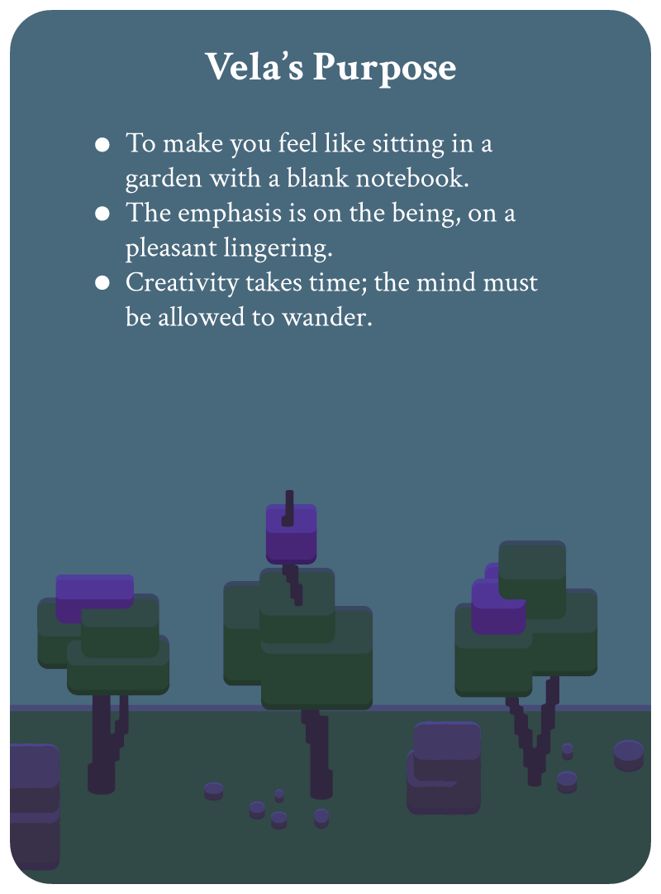

... an accessed star (lime slice) with one item: the frame with text.
Items are the actual container of user content (text and images).
Items make up the content of a star.
From afternoon to night:
... you can adjust item backgrounds to make text-to-sky contrasts stronger than in these examples if desired. Here's a smooth time-lapse:
People
... are using ever larger screens,
... which take up most of their peripheral vision.
Unprecedented digital immersion.
Sitting in front of a (horizontal) wide screen that just shows an A4 (vertical) paper on a bland background has little to do with human nature.
Word processors emerged in the early 90s alongside limited hardware and were geared towards printing. Since then they changed little in design.
Then they're collab and brainstorming apps, but they're rigid, have a single-use-plastic design (small, shallow projects), and by emulating office tools (whiteboards, post-its...) they inherit their limitations. And mind map apps never worked for creativity (or anything): they enforce an hierarchy which is counter-creative; they don't feel dynamic and get crowded quickly.
Computers have become so much more. The proof lies in computer games.
Vela's purpose is to combine a computer game experience with work. That is: game graphics + spatial movement + dynamic object and information handling.

The backdrop in version I are stylized clouds and trees. The style is somewhere in between pixel art (blocky) and vector art (smooth contours), the result is cherry trees looking like candy (not intended). It shows the spring-version; the landscape as well as stars change with every season. Everything is hand-crafted, no AI for art creation.
The Development
... so far was great fun. It is what I love to do.
In Vela come three big loves of mine together: nature, creativity and tech. When I'm not working on it, I'm thinking about it all the time, which is a good sign.
First I developed a design concept which took two years and three revisions. Then:
I've been busy building an engine on top of the 2D framework (LÖVE): creating a camera, animations, connection engine, text engine and more. Except for internet protocols, I've not been using any libraries and coded up my own environment. That is to ensure coherent design that suits the purpose of Vela.
Beyond Version I
If Vela should become successful, then this is how it will look:
The whole design concept of Vela was conceived with worlds like this in mind. However, creating this level of visual experience is beyond my league. (Disclaimer: this is an old presentation image and the star and connection design you can see here is already obsolete.)
This will be the work of skilled artists.
In the following link are more such Vela world impressions, also showcasing more use cases for Vela. Since this is not how version I will look, it's outsourced onto a Canva presentation to avoid confusion.
A more in-depth look into the design of Vela version I.
CONSTELLATION
... the constellation symbol and name are floating nearby.
FIELD
... the field symbol and name is on the upper left. The frame adjusts itself.
STAR
... an opened / accessed star. It contains three items, two with images and one with text. As with fields, the frame adjusted itself around the three items.
Design • Paradigms
(this is a short extract of a wider scope of design decisions)
Vela's design is about finding and developing ideas. It's not about publishing.
Much of the design stems from what I believe are the three pillars onto which creativity can thrive: space, pleasantness (beauty) and associative creation.
Stars, Constellations and Fields are there to manage your content: the items.
Every star is equal...
... and every connection is equal and they don't have directions.
... this prevents a hierarchy of nodes (your stars). An initially enforced hierarchy is poison for creativity. Just let your thoughts flow, think of management later.
If you want a constellation to represent time, progress, flow... simply build it from left to right, or skywards.
The galaxy doesn't encourage a direction, you can expand leftwards, or skywards. In stars: you can place items left of the star, and anywhere around it.
Constellations and fields will be recognizable by their appearance (more than their names), just as with real constellations.
Galaxy objects don't need names. Their unique identity is their position in the sky. Two objects of the same kind cannot sit on the same spot. You can give them names.
No nesting, no folders and subfolders. Vela forces users to move over a 2D space to locate content: the sky / galaxy. Everything exists side by side.
The navigational space is 2D because the screen is a two-dimensional surface. It shall feel inviting like standing before a canvas or open window. Interacting should be direct like writing to a blackboard.
Vela is designed for horizontal movement. It's meant for walking. Our most natural state, and so conducive for creativity, as being creative is itself a state of motion.
Vela embraces the space widescreens provide.
Anything looking like a web or social media page is a big no-no!
No drop-down menus.
No static tool bars / panels.
And such.
It's being solved differently.
The design of features and functionalities is set in stone for Version I. It was finished long before any visual draft or line of code had been drawn or written.
Afterword
It has been scientifically demonstrated that being in nature enhances creativity. We've spent the last 400.000 years there and much longer as evolving mammals, that's why I believe we're hardwired for its experience.
However, since recently (2007) more people live in urban areas than in rural ones. Wouldn't it make sense to bring nature to their apartments?
Pot plants are one solution.
Another could become Vela.
Be like Jack London and have your own haven of natural serenity. For the sake of creativity. Don't be like Jack London and drink heavily. Also for the sake of creativity.
Another source of inspirational pleasantness for me have been computer game graphics and hand-drawn art. There's something so soothing about them; the clarity and evenness of the colors and contours; the beauty of nature in a clearer, liberated way like Asian Gongbi or Ukiyo-e drawings. And computer game graphics can feel natural and alive due to motion and animation.
In Vela I'm striving to give you both: nature as pleasant art. There will also be beautiful urban spaces.
This application is ultimately for myself. I've always been having a strong creative streak, but there was no digital tool out there that would be a good friend and vessel for the scatterbrain and endless train of thoughts that is my mind. The best I could do was to sit in a garden with a A4+ notebook with blank pages (no lines!) and drawing pen for writing prose. Like this I literally developed the first design concept of Vela. The next three revisions were developed in Sublime Text, for which I wrote a small script to use syntax highlighting for my prose. Something like Microsoft Word was out of question, for me it's revolting. Its design has nothing to do with developing ideas.
---
In this project story I've always been relating to myself as the sole creator, but in the rewards I'm relating to us. And that's because there will be a growing team.
I want to share with you Vela. Not just the launch product, but the journey of its completion towards launch, and then the journey of it evolving into more. Become part of the people behind Vela and their experiences, explorations and work.
• • • • •
• The Features •
Functional Scope of Version I
• • • • •
You're now having a pretty good idea what Vela is about.
The overview concludes with the previous chapter.
If you're curious about details, you can read on.
This chapter is mostly a functional listing of what version I contains. It does not mention every small feature; I omit some points, partly because they may be novel features, and also because I want to (positively) surprise you.
Platforms
Windows
macOS
Linux
Galaxy
The galaxy is your local save file.
The galaxy appears as a boundless sky with a landscape on the ground.
Create as many galaxies as you want.
Almost all you do in Vela happens inside a galaxy.
Items
Fill items with text and images.
Like galaxy objects, items have a "hard border" and cannot overlap. They're resizable and customizable.
A model for items is Sublime Text.
The design aim for items is to be like text editors. Items need to have the feeling of lightness, flux and changeability of text editors, but it also need to allow some of the customs prose writers expect: styling like bold, italic, changing fonts, font colors, font sizes, text highlighting and more.
Lines, or paragraphs, play a pivotal role. They're information and styling units that ensure a feeling of lightness of flow.
A line / paragraph can hold text or an image.
Displayed line numbers (optional).
- Items • Text -
A line / paragraph can have a one font at one size.
You can set any font and any size per line / paragraph.
Within one line / paragraph you can have multiple: changing font colors, changing stylings (bold, italic...), changing highlighting ... across selected characters.
Four text alignments (left, right, center, justify).
One serif, one sans-serif and one handwriting font: Crimson Pro (+ Crimson Text), Montserrat, Gaegu. All three are free and open-source font families. You can load additional font families into Vela (.ttf file).
Items will automatically provide their own background-adjustments for pleasing background-to-text contrasts when necessary. Pre-set contrasts will be adjustable in strength; backgrounds and fonts are also directly customizable.
- Items • Images -
an image takes up a line / paragraph.
only one image per line.
images will keep their aspect-ratio and will fill the width of the item (text width) as long as resolution is >= item width. Otherwise it will be smaller and placed according to text-alignment.
Images will have a smooth contour that contrasts them to the background / sky.
.jpg / .jpeg, .png .bmp .tga .hdr .pic .exr
Galaxy Objects (Stars, Constellations, Fields)
... are grabbable, movable, searchable ...
Appearance
Different star graphics that befit the season (snowflake crystals in winter, cherry blossoms in spring...).
Your HUD, your galaxy objects and items are customizable to some degree: choosable colors, size...
A world with a simple vector graphics style (as you could see), with 9 natural lights that blend in dynamically for the actual, correct time of your location.
You can choose natural lights at any time, customize times, etc.
The ground of the visual world will be a little more feature-rich than in the video
... and will have small adaptations befitting the seasons (trees having a snow caps in winter, blossoms in spring...).
Multiple Window options: borderless fullscreen, windowed (with or without borders).
Anti-Aliasing levels: none, MSAA: 2x, 4x, 8x
Interaction
Shortcuts that make item and galaxy interaction a breeze.
Same shortcuts may have different effects whether you are in the galaxy or interacting in an item.
The way shortcuts work may be novel. Hint: it's not gonna be Ctrl + key, Ctrl + Shift + key etc.
Exceptions are: Ctrl + z, x, c, v, as they're so popular. They may be the only ones.
Some fancy interactions that may be new within today's desktop application landscape.
Navigation (HUD, inventory):
You'll have a customizable HUD (heads-up display) that helps you take bearings within your galaxy.
The HUD, like real HUDs, is "on the screen", visually overlaying the galaxy.
The HUD represents the user.
The HUD shows arrows at the screen edges to the closest galaxy objects outside of the camera's field of view. The arrows' appearances match that of the galaxy objects.
The HUD offers to show an area with all your constellations and fields as small, stylized miniature images. You will recognize them by their shape. Clicking on one will make the camera fly you there and center the target object.
"tell" the HUD (by typing into a search field) what you're looking for. It'll provide suggestions of galaxy objects (star, constellation, field, items). Click on a suggestion to let the camera fly you there.
The HUD comes with an inventory. A slot can hold one of: text, image, item, star, constellation or field. The inventory doesn't have a fixed size, but grows and shrinks dynamically as you add or remove objects.
Objects in the inventory are properties of the HUD and not of the galaxy.
They HUD, belonging to the user, is saved in the local user file. So everything regarding the HUD, including the inventory with all stored objects, is saved on app close and will still be there on app start.
The inventory's purpose is caching and carrying.
Loading and Import
In your OS there will be one, single folder which works as your file gateway to Vela.
Opening Vela for the first time will create that folder (by default on desktop; path is changeable).
Everything you save and export and everything you load and import from Vela happens to and from this one folder.
Just place all the images you want into that folder, and Vela will automatically load them. In Vela it will present them in an openable file pool, from where you can add them to your items.
You can add sub-folders for your own convenience, Vela will automatically walk through all of them and gather all the readable files to Vela's file pool.
You cannot open a file explorer (doesn't exist) in Vela to open individual files.
Apart from images and Vela files, Vela will also load plain text files (.txt) from that folder whose content you can add to your items.
.txt file is the only text file format that is importable.
You can paste texts saved to your OS's clipboard (Ctrl + C) directly to your items.
Saving and Export
The galaxy is your default save file. Any interaction is saved live (can get turned off).
Any Galaxy object is savable. Each will contain all its children, meaning saving a constellation will contain all the stars, with all the items and all the items' contents. The suffix of the files may look like this: .VelaGalaxy, .VelaStar, .VelaConstellation, .VelaField, .VelaItem. Use this to share work, without having to share the whole galaxy.
All images loaded into Vela are linked (they're not embedded in the Vela save file).
Item content is exportable as HTML (images and styling included) or plain text (no images, no styling).
The exported HTML files are openable in Microsoft Word, where the styling / formatting is conserved (that's because the exported HTML file will use simple in-line styling, which Word can understand).
You can export on any level. Exporting a star e.g. will make Vela go through all its items and put everything together into one HTML page. It will go from top left to bottom right through the star's items. It will do the same with constellations, fields, even your galaxy.
Not included in version I
Cloud service. Your safe files are stored on your computer.
Hence no collaboration support for other users to join your galaxy and work on it in real-time. If you were to share work, you'd have to share your files.
Touch support. Version I. is being developed for mouse and keyboard only. Using a touch screen does not necessarily exclude Vela, as long as you have a keyboard and a mouse or trackpad.
A mobile (smartphone) app.
These features are for the future post version I.
... in other words:
Vela version I is an offline, standalone, "singleplayer" desktop application.
All the effort goes into achieving a good user experience first. Then we can think of more.
There's no point in making anything collaborative while it doesn't yet feel convincing for a single user.
The original design for Vela was conceived for introvert creatives.
The design is standing, as is the engine written on top of the framework. But there's still a lot of figuring-out to do. How will users feel? Does opening Vela positively pop into your eyes and give you good vibes? Do interactions contribute to a Zen flow? How do we make contrasts of text to changing backgrounds pleasing...
All that comprises Vela version I is still a small subset of the design concept behind it. This is to let you know that there's so much more waiting than what this list offers. All that will gradually come to live sometime post launch.
Credits
The content of the star showcase (pesto recipe) early on (text) and in the chapter "Design • Galaxy Objects" (text and images) is retrieved from loveandlemons.com: Love and Lemons, LLC. The recipe is shortened for presentational reasons.
The items contents (text) in the video "VELA Natural Lights Palette" showcasing prose are the first three chapters from three books (in order): "Build What Matters" by Ben Foster and Rajesh Nerlikar; "Wild Swans" by Jung Chang; "The River's Song" by Suchen Christine Lim (first chapter of this book also showcased in the next video: "Smooth Twilight Timelapse")
Curved widescreen graphic in chapter "People": Samsung Electronics Co., Ltd.
Peripheral Vision graphic in chapter "People": original retrieved from Wikipedia article of "Peripheral Vision". Graphic uploader: Zyxwv99. The graphic has been altered for presentational reasons.
Background in the image in chapter "Beyond Version I" that shows the sky over Tokyo: CoMix Wave Films.
Source of photo of Jack London writing in chapter "Afterword": The Book of Jack London by Charmian London.